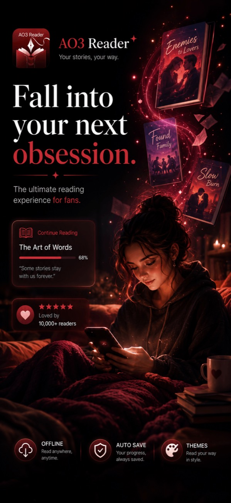
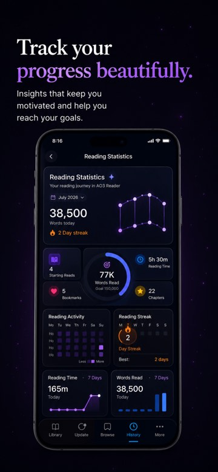
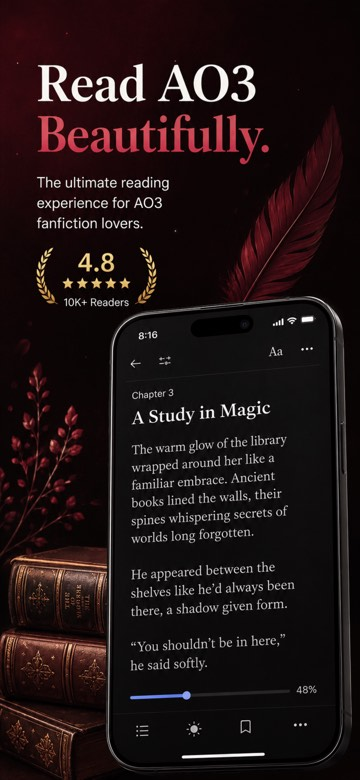
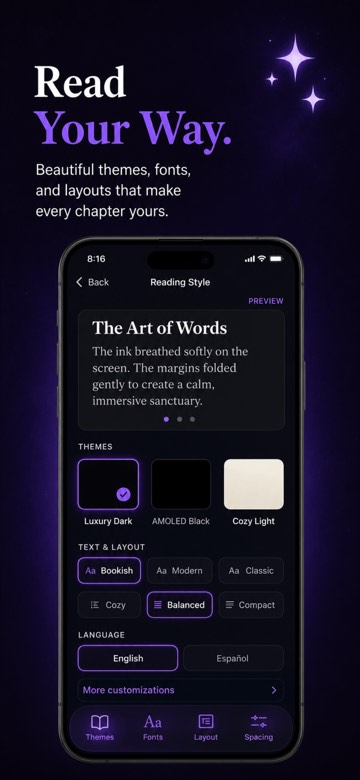
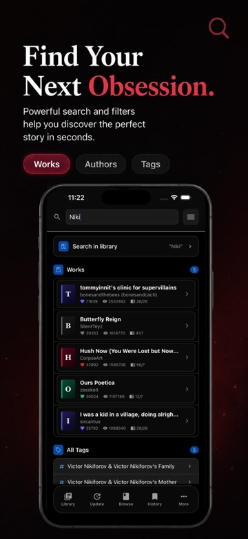
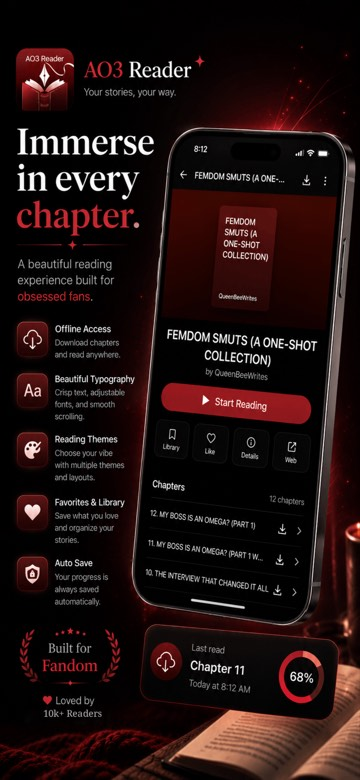
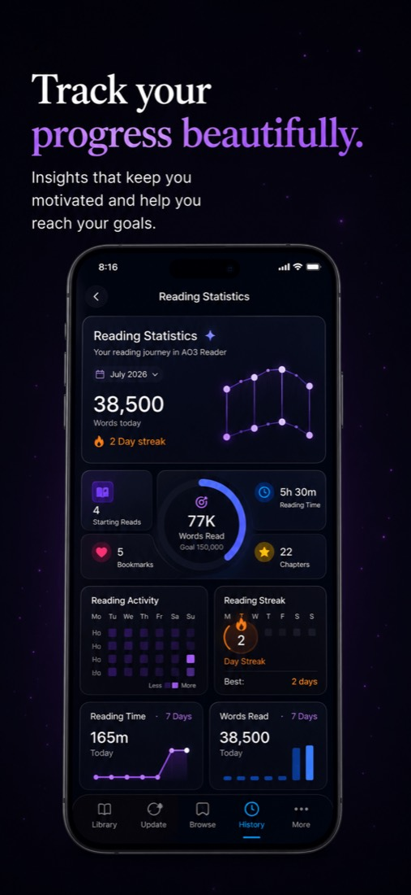

Offline reading
Download works and whole chapters before you go, then read anywhere — on the train, on a flight, or wherever the signal drops.
Unofficial · iPhone & Android
A beautiful unofficial AO3 reader for iPhone and Android, built for offline reading, discovery, organization, customization, and immersive long-form reading.


Everything a reader needs
Download works and whole chapters before you go, then read anywhere — on the train, on a flight, or wherever the signal drops.
Crisp, considered type with adjustable size, spacing, and fonts built for long chapters, not short posts.
Switch between luxury dark, true black, and cozy light — tuned for late nights and bright afternoons alike.
Save your place in any chapter and organize the works you love into collections you'll actually return to.
Search works, authors, and tags together, then filter by fandom, rating, and relationship to land on exactly what you're craving next.
See your words read, chapters finished, and reading streaks build over time — a quiet record of every story you've lived in.
Inside the app





Feature spotlight
Every session adds up. AO3 Reader keeps a quiet, ongoing record of your reading life — reading time, chapters completed, words read, and the streaks that keep you coming back.
The reading experience
No banners, no clutter, no losing your place. Download a work before you lose signal, pick a theme that suits the hour, and let the app fade into the background — because the only thing that should hold your attention is the next line.
Every fandom welcome
Archive of Our Own hosts millions of works across nearly every fandom and category imaginable. AO3 Reader helps you move through all of it — one clean, focused app for whatever you're into this week.
Fandom and franchise names are used descriptively to describe available content categories on Archive of Our Own. AO3 Reader is not endorsed by or affiliated with these franchises or their rights holders.
Good to know
No. AO3 Reader is an independent, unofficial app. It is not affiliated with, endorsed by, or sponsored by the Organization for Transformative Works or Archive of Our Own.
Yes. Download works and chapters to your device and keep reading with no connection at all — your progress is saved automatically as you go.
Yes. AO3 Reader is available on the Apple App Store for iPhone and on Google Play for Android.
Yes. Choose from multiple reading themes, fonts, text sizing, and layout density so every chapter reads the way you want it to.
Yes. Bookmark your place, like the works you love, and keep your library organized into collections you can return to anytime.
Free to download. Yours to get lost in.